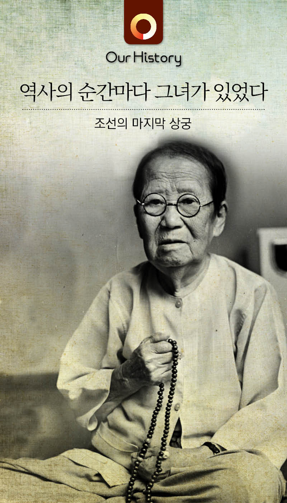
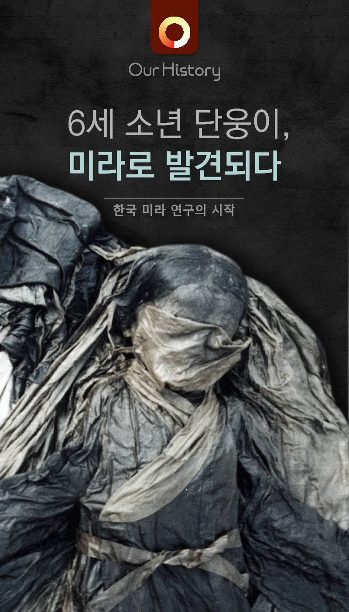
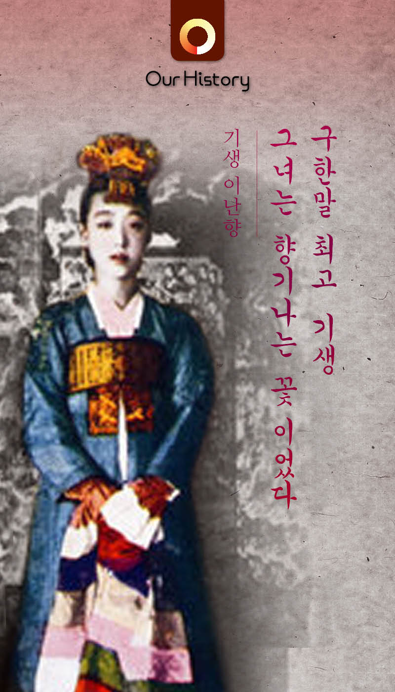
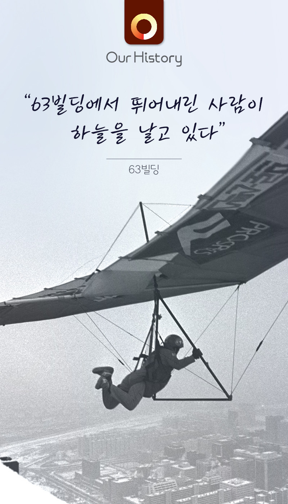
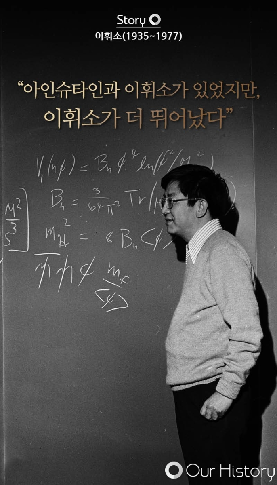
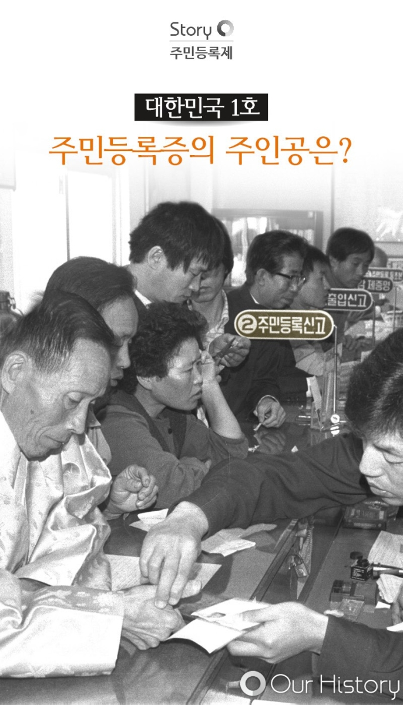

CASE 04
한 문장으로 51만 명을 멈춰 세우다
중앙일보 'Our History' · 카드뉴스 14건 · 발제·제목·본문 직접 작성 — 기여도 90% (디자인 협업)
SITUATION & TASK
신생 콘텐츠 앱에서 유저의 스크롤을 멈추게 할 첫 문장이 필요했습니다.
ACTION
기사·사진 DB를 발제 단계부터 탐색해 카드뉴스를 기획하고, 제목과 본문 텍스트를 직접 구성했습니다.
RESULT
포털에 노출된 14건은 406만뷰를 달성해, 중앙일보 디지털 전환기에 유의미한 성과를 냈습니다.
기여도
기획
95%
카피
100%
발행
90%
TOOL
에디터카피라이팅기획구성SNS바이럴
01
문제 정의
콘텐츠를 보려고 앱을 따로 켜는 사람은 거의 없습니다.
신생 콘텐츠 앱이 넘어야 할 벽은 정보의 질이 아니라 첫 문장이었습니다. 기사와 사진 DB를 발제 단계부터 탐색해 카드뉴스를 기획하고 제목과 본문 텍스트를 직접 구성했습니다.
02
직접 기획·작성한 카드뉴스
커버 15건
콘텐츠 전체 보기 →
![[울산 가재소년] 사라졌던 소년들이 28일 만에 돌아왔다](oh-cover1.jpg)
[울산 가재소년] 사라졌던 소년들이 28일 만에 돌아왔다
채널다음뉴스 메인 · 네이버뉴스 메인
조회51.7만뷰 / 45.4만뷰
![[카드뉴스] "아이고!" 불국사에 울려퍼진 스님의 비명](https://limseoyoung.vercel.app/oh-cover2.jpg)
[카드뉴스] "아이고!" 불국사에 울려퍼진 스님의 비명
채널네이버 메인
조회2시간 만에 25만뷰
![[삼풍백화점] 나는 그날, 악마를 보았다](https://limseoyoung.vercel.app/oh-cover3.jpg)
[삼풍백화점] 나는 그날, 악마를 보았다
반응페이스북 공감 3,353건 · 공유 390회+

그럼에도 "내가 살아남은 이유가 분명히 있었다"
채널네이버뉴스 메인
반응댓글 1,170+
![[카드뉴스] 불타버린 컨테이너, 그 곳엔 아이들만 있었다](https://limseoyoung.vercel.app/oh-cover5.jpg)
[카드뉴스] 불타버린 컨테이너, 그 곳엔 아이들만 있었다
반응페이스북 공감 372+ · 공유 45회+
![[카드뉴스] "단 한 명의 전우도 전장에 남겨두지 않는다"](https://limseoyoung.vercel.app/oh-cover6.jpg)
[카드뉴스] "단 한 명의 전우도 전장에 남겨두지 않는다"
채널네이버뉴스 메인
반응댓글 900+
![[카드뉴스] "한 번의 실수도 용납될 수 없다" 병든 문화재 새 생명](https://limseoyoung.vercel.app/oh-cover7.jpg)
[카드뉴스] "한 번의 실수도 용납될 수 없다" 병든 문화재 새 생명
채널네이버뉴스 메인
반응댓글 94+
![[황태손 이구] 그는 죽고나서야 곤룡포를 입을 수 있었다](https://limseoyoung.vercel.app/oh-cover8.jpg)
[황태손 이구] 그는 죽고나서야 곤룡포를 입을 수 있었다
반응페이스북 공감 337+ · 공유 40회
![[무령왕릉] 무덤을 열던 그날, 우리는 후손들에게 큰 죄를 지었다](https://limseoyoung.vercel.app/oh-cover9.jpg)
[무령왕릉] 무덤을 열던 그날, 우리는 후손들에게 큰 죄를 지었다
반응페이스북 공감 1,213+ · 공유 187회+

[조선의 마지막 상궁] 역사의 순간마다 그녀가 있었다

6세 소년 단웅이, 미라로 발견되다

[기생 이난향] 구한말 최고 기생, 그녀는 향기나는 꽃이었다
조회49.6만 읽음

[63빌딩] "63빌딩에서 뛰어내린 사람이 하늘을 날고 있다"

[이휘소] "아인슈타인과 이휘소가 있었지만, 이휘소가 더 뛰어났다"
조회19.6만 읽음

[주민등록제] 대한민국 1호 주민등록증의 주인공은?
조회13.9만 읽음
03
서비스 노출 화면
실제 서비스 페이지에 노출된 카드뉴스
14건 합계 약 406만 읽음
카드뉴스 발행 이후 서비스 페이지에 실제로 노출된 화면입니다. 제목은 모두 직접 작성했습니다.


약 406만
14건 합계 읽음
58.7만
최고 단일 콘텐츠
14건
발행 카드뉴스
04
포털 메인 노출과 반응
포털 메인 노출과 반응
2016년 당시 직접 캡처한 화면 기록
[카드뉴스] '단 한 명의 전우도 전장에 남겨두지 않는다'
네이버 모바일 메인 현충일 카드 노출
정치 많이 본 뉴스 2위
2016.06.06
257,750
조회 · 같은 날 정치 랭킹 2위
[카드뉴스] "아이고!" 불국사에 울려퍼진 스님의 비명
네이버 모바일 메인2016.07.02
메인뉴스 노출
메인 노출 직후, 자사 앱 실시간 동시 접속
구글 애널리틱스 · 자사 앱 실시간2016.07.02
5,082명
앱 동시 접속 · 이 중 네이버 유입 4,909명 (모바일 97%)
[카드뉴스] 안두희는 왜 백범을 암살했나 · 8년 만에 돌아왔소, 늦어서 미안하오!
네이버 많이 본 뉴스2016.06
같은 시각 정치·생활 두 카테고리 상위가 모두 직접 제작한 카드뉴스였습니다.
정치·생활 1위 동시 석권
[카드뉴스] 사라졌던 소년들이 28일 만에 돌아왔다
네이버 뉴스 · 랭킹뉴스 시사2016.07
454,932
랭킹뉴스 시사 1위
51.7만뷰
단일 콘텐츠 최고 조회수(다음)
2시간·25만뷰
네이버 메인 최단 도달
6,777명
앱 최대 동시접속
댓글 7,301건 · 공감 6,270건으로 단일 콘텐츠 최다 반응을 기록했습니다.